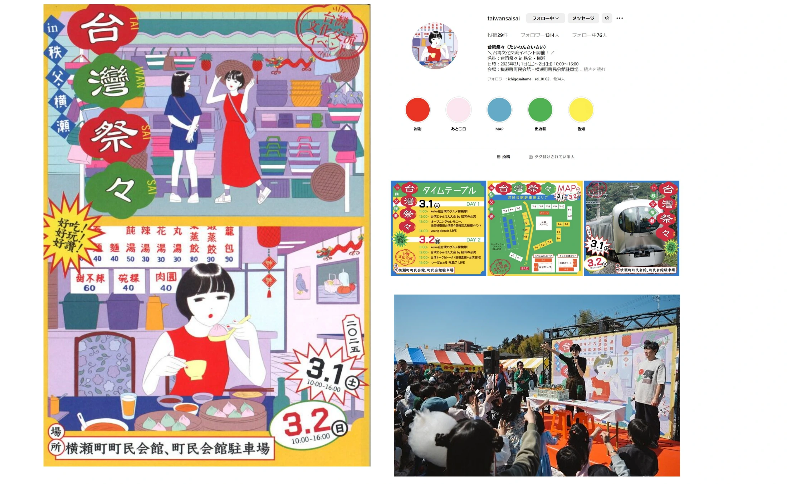

観光 / 文化 / 埼玉
台湾祭々 in 秩父・横瀬

PROJECT INFORMATION
公式サイトを見る ↗（新しいタブで開く）埼玉県横瀬町の「台湾祭々 in 秩父・横瀬」。イベントのメインビジュアルを担当した実績です。
01 / 背景とテーマ
輪郭を与える
熊本で開かれ大盛況で幕を閉じた「台熊祭々」のコンセプトを引き継ぎ、秩父・横瀬で開く台湾文化交流イベントです。台湾と秩父地域のカルチャーを持ち寄る場として立ち上がりました。
02 / SCHEMAの担当範囲
全体を整える
SCHEMAは企画・ディレクションを担当。メインビジュアルは深川優さんにご協力いただき、シンプルで綺麗な線と独特な色遣いで「台湾の日常」をテーマに描いていただきました。
03 / 取り組みの視点
枠組みをひらく
台湾から約15店舗、うち埼玉県初上陸が約10店舗。フードブースやキッチンカーは20以上、初日の夕方からは台湾夜市も展開しました。山あいの町に、台湾の日常がそのまま立ち上がる二日間です。